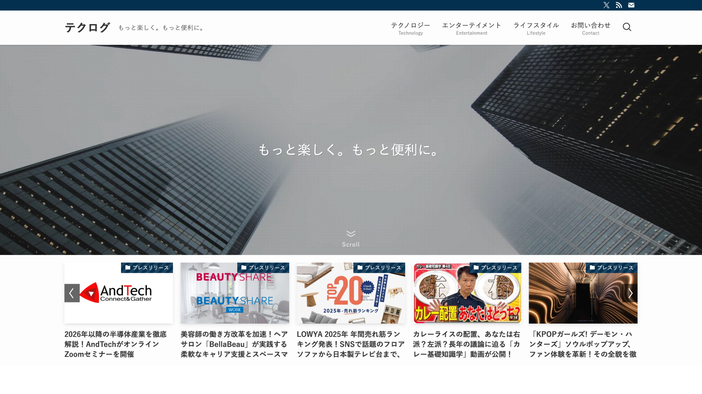
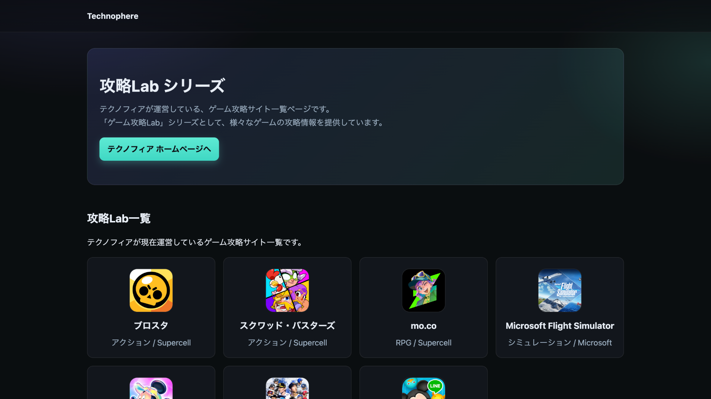

Mobile App
BrawlTech
アクションゲーム「ブロスタ」の攻略・統計アプリ。 Supercell公式のAPIや外部APIを使用し、リアルタイムデータ表示とキャラクター攻略情報を提供。 Flutter で iOS/Android 両対応。
AI プロンプトエンジニア × フルスタック開発者
「最新テクノロジーで世界をもっと面白く」——
Webサイト運営やアプリ開発をはじめとし、最新のAI技術を開発プロセスの核に据え、思考の速度でプロダクトを形に。
コンテンツ運用・SEO対策・アクセス解析を軸に、継続的な情報発信を続けることで、独自のWebメディア「テクノフィア」で月間150万PVを達成。
データを起点にPDCAを回し、検索流入の最大化とエンゲージメント向上を実現しています。
最新のAI技術を開発プロセスの中枢に据え、プロジェクトに最適なモデルを選定しながら「AI駆動型開発」で開発速度と品質を最大化。自分の目でコードレビューを行い、AIと人間の協働による最高のアウトプットを追求しています。
FlutterやSwift、Next.js、WordPressなどの技術選定からMVP構築、さらにアプリストア公開、クローズドテスト実施、ユーザーフィードバックに基づく改善まで、リリース後の全工程を一通り経験しています。
テクノフィア設立8ヶ月で達成したKPI
アクションゲーム「ブロスタ」の攻略・統計アプリ。 Supercell公式のAPIや外部APIを使用し、リアルタイムデータ表示とキャラクター攻略情報を提供。 Flutter で iOS/Android 両対応。
慶應生向け学習サポートアプリ。 公式の学習支援サービス「K-LMS（Canvas）」のAPIから情報を取得し、アプリ内で整理された状態で表示。 数日のログイン保持機能と課題チェックが売り。
ディズニーランド利用者向けカチューシャレンタルサービス。 来園の1回だけのためにカチューシャを購入するよりも断然お得。 「デポジット制の予約→QRコードで貸出と返却」という簡単フロー。
App Store / Google Play のアプリリンクを ブロックエディタから簡単に生成・挿入できる WordPress プラグイン。 アプリ紹介記事の作成を効率化。
GitHub リポジトリと連携している自作の WordPress テーマ・プラグインを ワンクリックでデプロイ（更新）できるプラグイン。 CI/CD を WordPress に手軽に導入。
慶應義塾大学エンジニアサークル「Lemon」専用のAIプラットフォーム。 24時間対応のAIメンター・アイデアガチャを実装。 チーム開発でFE / UI・UXを担当。
Google Search Console のデータをわかりやすく可視化するツール。 SEO 運用を効率化するダッシュボードアプリ。
音楽に合わせたインタラクティブな体験を提供するモバイルアプリ。 ユニークな UI/UX を追求したエンターテインメント系プロダクト。

WordPress・SEO・アプリ開発などの技術情報に加え、 エンターテイメントやライフスタイルまで幅広いテーマで発信する 総合メディア。

テクノフィアの主力メディア。約7つのゲーム攻略サイトを傘下に持つ ゲームメディアグループ。中学生の頃から培った攻略の知見を活かし、 月間数十万 PV を達成。
個人 / 企業様向けの Web 制作・その他依頼
WordPress をベースにしたコーポレートサイト・LP・メディアサイトを制作。 SEO 最適化・表示速度改善まで一貫して対応。
商品レビュー記事の執筆など、Web 制作に限らずさまざまな案件に対応。 まずはお気軽にご相談ください。